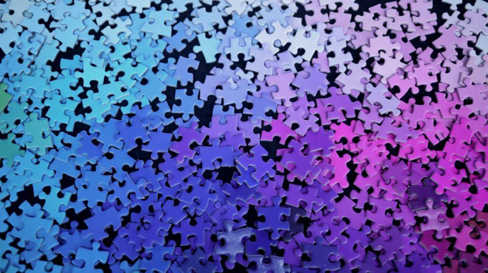
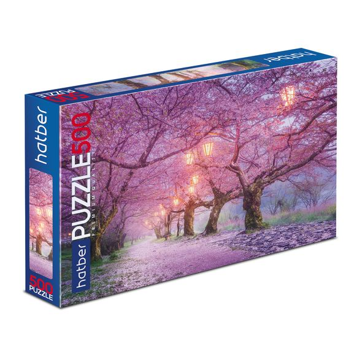

Пазл (англ. jigsaw puzzle) — это головоломка, в которой требуется составить полноценную картинку из разрозненных фрагментов изображения различной формы. Игра была создана английским картографом и издателем Джоном Спилсбери примерно в 1760 году. Более 250 лет увлекательное занятие не теряет своей популярности. И это неудивительно, поскольку игра является не только веселым, но и полезным времяпровождением. Из чего же состоят пазлы, и чем их сборка полезна для взрослых и детей? Подробнее об этом вы узнаете в нашей статье.
Пазлы представляют собой картинку, разбитую на множество составных частей. Число элементов и абстрактность изображения являются основными критериями сложности. Количество фрагментов зависит от вида головоломки и возрастной группы, на которую она ориентирована. Так, пазлы можно условно разделить на:
- Простые для детей от 1 года. Головоломка состоит из 2, 4 или 6 элементов.
- Небольшие для детей от 5 лет. Изображение может быть разделено на 20-60 деталей.
- Стандартные для более взрослой аудитории. Пазл может состоять из 150-300 фрагментов.
- Большие головоломки для взрослых. Игра с высокой сложностью, в которой требуется собрать картинку из 500 и более элементов.
Из чего состоит пазл: кратко об изготовлении головоломок
Практически все знают, что такое пазлы, но для многих остается загадкой, как происходит процесс их изготовления. На первом этапе специалисты наносят выбранное изображение (это может быть фотография или картинка) на основу, для которой в большинстве случаев используется плотный картон. Печать осуществляется с помощью офсетного оборудования, позволяющего получить распечатки высокого качества. Следующим шагом является покрытие изображения лаком, который придаст головоломке прочность и износостойкость. Последний этап — резка картинки на мелкие фрагменты с помощью штанцформ, специального оборудования, позволяющего разделить изображение на определенное количество элементов одного размера.
Чем полезны пазлы, и кому рекомендуется решать головоломку
Теперь, когда вы знаете, что такое пазл, из чего он состоит и что значит возрастное ограничение головоломки, давайте поговорим о пользе популярной игры. Решение логических задач необходимо для развития умственных способностей как детей, так и взрослых. Да-да, взрослым тоже необходимо поддерживать остроту своего ума:) Именно поэтому, если вы хотите активно развивать свой интеллект и повышать концентрацию внимания, лучшего инструмента и не придумаешь. Чем же еще полезны пазлы?
- Развитие усидчивости и повышение концентрации внимания. Эту головоломку нельзя решить «кое-как». Для того, чтобы с ней справиться, необходима внимательность, ведь все фрагменты подходят друг к другу, как ключик к замку.
- Пазлы развивают мелкую моторику рук у детей. Для взрослых это также своеобразная гимнастика для рук.
- Развитие фантазии и воображения. Собирая изображение по кусочкам, ребенок не видит полную картинку, поэтому мозг дорисовывает недостающие части, подсказывая, какой фрагмент необходимо использовать.
- Развитие логического мышления. Это означает, что при сборке пазлов необходимо учитывать их форму, изображение, последовательность и т.д. Ребенок или взрослый должны построить в голове настоящую стратегию.
- Укрепление памяти. Решая головоломку, ребенок помнит общую картинку, которую необходимо собрать, и держит этот образ постоянно в голове. Кроме того, собирая пазлы повторно, малыш будет уже знать, где какой элемент использовать.
- Снятие стресса и приятное времяпровождение. Согласитесь, так приятно после тяжелых трудовых будней собраться семьей за увлекательной игрой. Такое увлечение позволяет не только снять напряжение, но и сплотить близких еще больше.